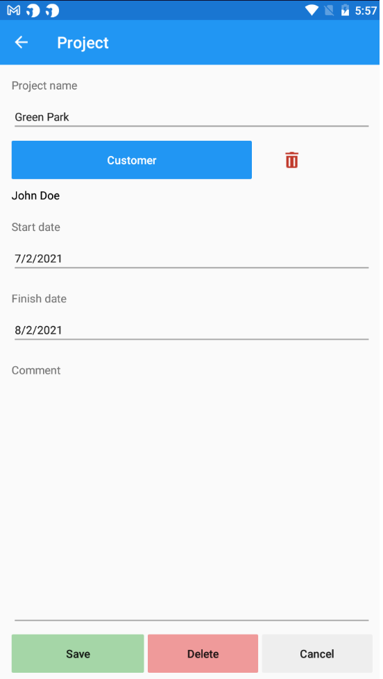
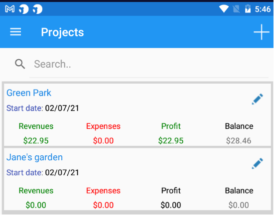

When creating a new project the following form appears:
A project can be linked to a customer. When invoicing this customer, the app will suggest to link the invoice with the project. The user is free to link the invoice to another project or to no project at all.
Sales invoices increase the project's revenues. Likewise, expenses that have been linked to the project increase the expenses of the project.
The above picture presents a list of all our projects:
A sales invoice has been linked to the first project. The net value is 22.95$ and appears as income. The customer hasn't paid anything and the balance is 28.46$ (net value + sales tax). No bills have been linked to this project yet and so the expenses are 0. The earnings of this project equal income - expenses.